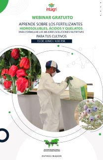
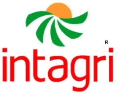
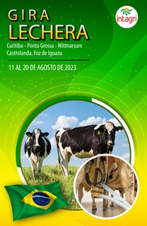

Taller sobre Como hacer un correcto muestreo de suelo, planta y agua para análisis de laboratorio
06/07/2023
Se hablará de temas relacionados a las características importantes de los fertilizantes hidrosolubles, ácidos y quelatos que se deben considerar para su elección en la elaboración y formulación de las mejores soluciones nutritivas más eficientes y rentables. Además, se hablará de insumos que contiene todos los iones y más en un solo producto para facilitar las aplicaciones eficientes de nutrientes. Se comentarán algunos argumentos comerciales y realidades técnicas de productos específicos como Nitratos de Calcio, Nitratos de Potasio, Ácidos Fosfóricos y Quelatos.
Ver Curso

Webinar sobre Los Elementos Secundarios en la Nutricion vegetal
15/08/2023
Los elementos secundarios en la Nutricion vegetal.
Ver Curso11° Congreso Internacional de Nutrición y Fisiología Vegetal Aplicadas Presencial
12/07/2023 - 13/07/2023
11° Congreso Internacional de Nutrición y Fisiología Vegetal Aplicadas Presencial.
Ver Curso

Gira Lechera A Brasil
11/08/2023 - 20/08/2023
En Brasil se producen más de 30 mil millones de litros de leche anuales. El Estado de Paraná en Brasil, es considerada una de las regiones más competitivas de Latinoamérica, en lo que respecta a producción de leche. En la actividad lechera sobresalen un grupo de lecherias (Fazendas), con sistemas en confinamiento o encerrados de altísima competitividad. Localidades como Castro y Carambeí,son reconocidas por su alta productividad en todos los rubros, y por la importancia del asociativismo (cooperativismo).
Ver CursoGracias por visitarnos!
Siguenos en nuestras redes sociales:

Jonan Pineda
Contactanos: Telefonos: +50487920393 +50449503330